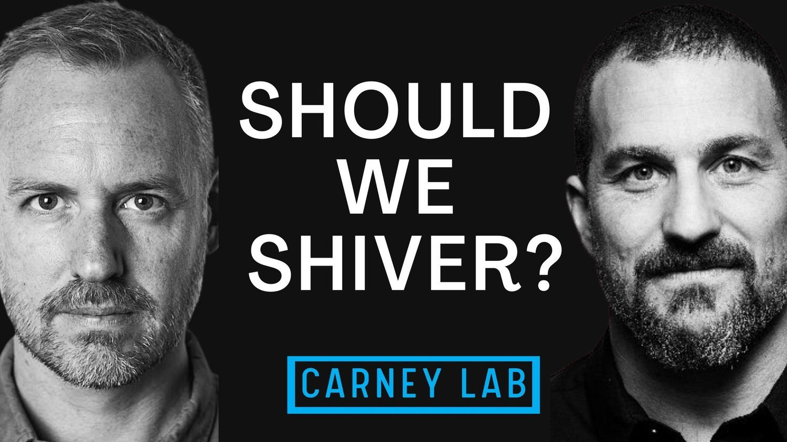

Last year Stanford neuroscientist Andrew Huberman put out a video where he suggested that ice bathers around the world were doing their ice bathing all wrong---at least when it came to fat loss. When I first heard his advice I worried that my entire career might have been in error and assumed that he'd dug deep into the literature and found the optimal protocol. But more than a year after his video came out--and after millions of views and listens--I decided to check in again and I was a little surprised that I couldn't find any testimonials or other video of people using his protocols and having their lives and bodies transformed. Maybe there was something wrong with his protocol?
In this week's video I go against more than a decade of training and let the shivers enter my body. I wanted to know what it felt like to embrace after drop. It turned out that--even if he is right on the science--the shiver method is just so miserable that it turns anyone who tries it away form ice baths forever. Indeed, there's good reason to think that regular ice baths that I (Scott Carney) as well as Wim Hof, Laird Hamilton and Brian Mackenzie have been teaching offer the sort of experience that will keep people coming back to ice water and ultimately build up similar levels of brown fat (BAT).
So while I have immense respect for Huberman--indeed he is a major part of my book The Wedge--I think that in at least this piece of advice, he got something a little wrong.